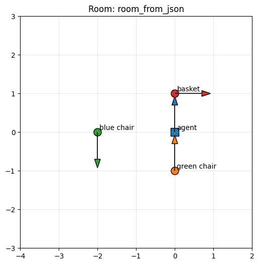
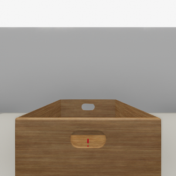
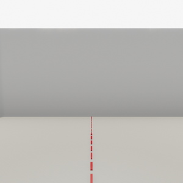
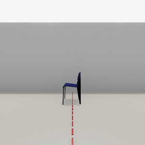

Sample 1: test_0
Config: SpatialGymConfig(mode=vision,format=free_think,eval_tasks=rot)

Turn 1
User
# Spatial Exploration Task
Your goal: Learn ALL spatial relationships between EACH pair of objects in the room.
## Direction Format:
Spatial relationships are described using (<horizontal>, <vertical>) format:
- **horizontal**: left, right, same
- **vertical**: front, back, same
- "same" means objects are aligned in that dimension (e.g., (front, same) means center front)
## Face direction
There are EXACTLY four facing directions: north, south, east, west. No other directions exist.
Suppose you are facing north, then:
- **forward**: north (same direction as you)
- **backward**: south (opposite direction as you)
- **right**: east (90° clockwise)
- **left**: west (90° counterclockwise)
## Critical Requirements:
1. **Complete Coverage**:
- Explore until you know where every object is relative to every other object. Only stop when you have all spatial relationships.
- Only know relationships between object and yourself is NOT enough.
2. **Be Efficient** (Avoid redundant observations):
- Focus on areas where you expect to eliminate some unknown relationships
- If you know all objects are in one general direction but lack specific details, focus your exploration there
- (e.g., if all objects are to your left but you don't know which are in front vs. back, explore the left side systematically)
3. **Stop When Done**: End exploration as soon as you have all spatial relationships
## Important Notes:
- Focus on **directional relationships** between objects, not exact distances
- Pay careful attention to the precise positions of objects in your field of view (left-front, **center-front**, right-front) to accurately determine spatial relationships.
- In each image, a red dashed line indicates the agent's center front direction.
After exploration, you return to starting position to answer questions.
## Room Layout
Imagine yourself as agent in a room.
You are facing north.
Objects in the room: green chair, blue chair, basket
You observe the room from the topdown view: , where the blue dot indicates the agent's position and the red arrow indicates the agent's facing direction.
## Action Instructions
You can move in the room and turn around to observe the room.
Available Actions:
Movement Actions:
- Move(object_name): Move to the same position as the object. You can ONLY move to object within your field of view. You can ONLY move to objects by name, not directions or others. Invalid examples: Move(left), Move(forward), Move(back)
- Rotate(degrees): Rotate by specified degrees, only valid degrees are 0, 90, 180, 270.
- Return(): Return to the starting anchor position
Final Actions:
- Observe(): Observe spatial relationships of all objects in the field of view relative to your current position. You can only observe objects that are within your field of view.
- Term(): Terminate the exploration phase
Answer with following format:
Movement: [<movement_action1>, <movement_action2>, ...]; Final: <final_action>
Format Notes:
- Use movement actions in Movement, and final action in Final.
- If no movement is needed, use [] in Movement.
- Actions in Movement will be executed in order.
- Separated these two lines by a semicolon.
Examples:
Valid Example:
Movement: [Move(table), Rotate(90)]; Final: Observe()
Valid Example (no movement):
Movement: []; Final: Observe()
Invalid Example (wrong order):
Final: Observe(); Movement: []
Rules:
- Term() must be alone (no movement actions)
- You have a field of view for observation: 90 degrees.
You have a maximum of 3 exploration steps.
Always output: <think> [Your thoughts] </think> <answer> [your answer] </answer> with no extra text.

Agent Think
From the starting position facing north, I see the basket directly in front (center front), the green chair directly behind me (back, same horizontal), and the blue chair to the left (left, same vertical). I know the relative positions of the basket and green chair, and the basket and blue chair, but I do not yet know the spatial relationship between the green chair and blue chair. To determine that, I should move to one of these chairs and observe the other objects from there. Moving to the green chair seems best because from there I can see the blue chair and basket and determine their relative positions to the green chair. Then I can confirm all pairwise relationships.
Agent Answer
Movement: [Move(green chair)]; Final: Observe()
Turn 2
User
Invalid action
You have a maximum of 2 exploration steps left.
Always output: <think> [Your thoughts] </think> <answer> [your answer] </answer> with no extra text.
Agent Think
From the starting position, the green chair is behind me, so it is not in my field of view and I cannot move to it directly. I can only move to objects in my field of view. The basket is directly in front and visible, so I can move to the basket first. From the basket, I can observe the other objects and their relative positions. This will help me learn the spatial relationships between the basket and the chairs, and possibly between the chairs themselves.
Agent Answer
Movement: [Move(basket)]; Final: Observe()
Turn Metricscoverage: 0
n_redundant_queries: 0
n_valid_queries: 1
redundancy: 0
answer: Nothing in your field of view.
redundant: False
relationships: []
target_name: basket
visible_objects: []
Turn 3
User
You moved at basket. You observe:
You have a maximum of 1 exploration steps left.
Always output: <think> [Your thoughts] </think> <answer> [your answer] </answer> with no extra text.

Agent Think
From the basket's position, I see nothing in front of me within the field of view, so I cannot observe any objects from here. I need to rotate to see the other objects. Rotating 90 degrees to the right (east) should show the blue chair, and rotating 180 degrees from the original position (facing south) should show the green chair. I will rotate 90 degrees to the right to observe the blue chair and possibly the green chair if visible. This will help me learn the spatial relationships between the basket and the chairs and between the chairs themselves.
Agent Answer
Movement: [Rotate(90)]; Final: Observe()
Turn Metricscoverage: 0
n_redundant_queries: 0
n_valid_queries: 2
redundancy: 0
answer: Nothing in your field of view.
degrees: 90
redundant: False
relationships: []
visible_objects: []
Turn 4
User
You rotated clockwise 90°. You observe:
You have a maximum of 0 exploration steps left.
Always output: <think> [Your thoughts] </think> <answer> [your answer] </answer> with no extra text.

Agent Think
After rotating 90 degrees at the basket, I see no objects in my field of view. This means the blue chair and green chair are not in this direction. Since I have no exploration steps left, I must return to the starting position and answer based on what I have learned. From the initial view, I know the basket is in front of the agent, the green chair is behind the agent, and the blue chair is to the left. Therefore, relative to each other: the basket is right of the blue chair and front of the green chair; the green chair is back of the basket and right of the blue chair; the blue chair is left of both the basket and green chair. I have complete spatial relationships between all pairs.
Agent Answer
Movement: [Return()]; Final: Term()
Turn 5
User
Invalid action
Exploration phase ended
You return to your starting position and orientation.
## Evaluation Question
You will perform a full 360-degree rotation by continuously turning counterclockwise in place.
As you rotate, imagine a narrow spotlight beam projecting straight ahead from your current viewpoint.
Your task is to identify the sequence of objects that become visible during the full rotation.
Instructions:
- Object at your current position is not included
- Objects are visible ONLY when you turn to face them directly
Choose the correct sequence:
A. basket, blue chair, green chair
B. green chair, blue chair, basket
C. basket, green chair, blue chair
D. green chair, basket, blue chair
IMPORTANT: You must respond with ONLY the single letter choice (E.g., A, B, C, D) in your answer
Answer:
Always output: <think> [Your thoughts] </think> <answer> [your answer] </answer> with no extra text.
Agent Think
Starting facing north, the basket is directly in front (north). Turning counterclockwise (to the left), the next object visible would be the blue chair, which is to the west (left). Continuing the rotation, the last object visible would be the green chair, which is behind the starting position (south). So the sequence is basket (north), blue chair (west), green chair (south).
Agent Answer
A
Evaluation Answer
A
Final Metrics:
score: 1
done: 1.0
step: 5